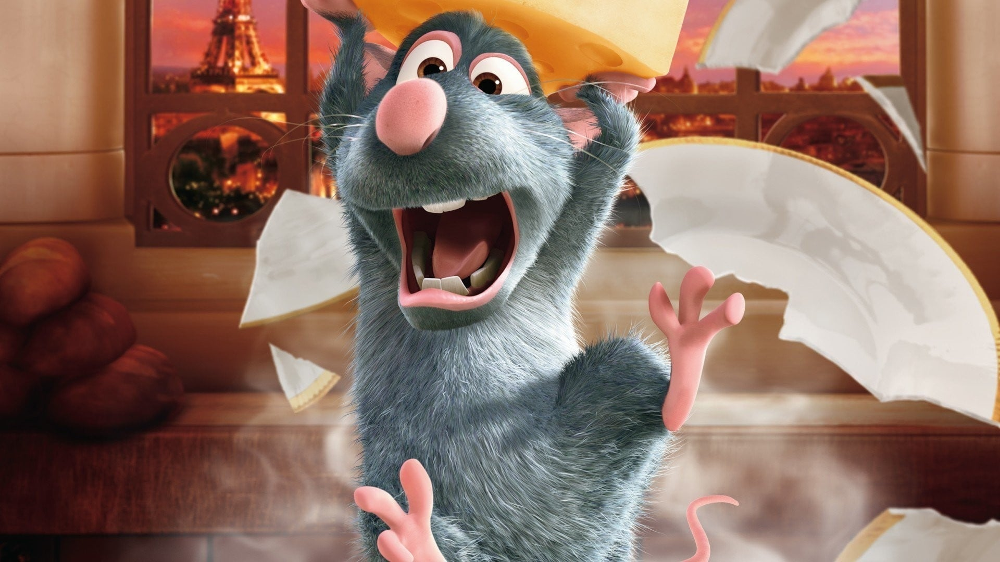

Há nomes de cientistas que contribuíram para a revolução francesa escritos no primeiro andar da Torre Eiffel.
A torre pode mudar de tamanho por conta do material na qual é feita, que dependendo da temperatura, faz a torre se expandir ou contrair.
É proibido tirar fotografias da Torre Eiffel à noite devido a uma lei de direitos autorais que há na França.
É apenas proibido à noite porque o que tem os direitos autorais são as luzes que há na Torre Eiffel,
não a torre de fato. No entanto, essa lei vale apenas se ela for fotografada ou gravada para fins lucrativos.
A pintura da Torre Eiffel é restaurada a cada sete anos e é feita a mão,
repintura essa que é feita em todos os seus 300 metros de altura. A tinta utilizada para o reparo de sua cor é a Tour
Eiffel Brown, a parte superior da torre
é pintada com uma versão mais escura dessa cor e conforme vai chegando a base, é utilizada uma versão mais clara dela.
Praticamente todos os filmes que se passam em Paris mostram em alguma parte
dele ou propaganda a Torre Eiffel. Temos como exemplos o desenho Ratatouille
e o filme Missão Impossível: Efeito Fallout. Todavia, não apenas os filmes que
fazem isso, as séries também, sendo um exemplo a série Lupin,
que mostra a Torre Eiffel em uma de suas capas de anúncio da primeira temporada,
mesmo ao longe, ela está lá.
Ratatouille

Uma das propostas que foram enviadas para Édouard consistia em construir uma guilhotina gigante.
Após conquistar França, Hitler desejava subir no topo da Torre Eiffel,
porém, a resistência francesa cortou os cabos do elevador da Torre Eiffel, e quando
Hitler descobriu que teria que subir os mais de 1600 degraus para chegar ao topo da
torre, ele se negou a subir, desistindo de seu desejo.
A Torre Eiffel recebe cerca de 7 milhões de turistas
todos os anos, mais ou menos 13 mil visitantes por dia,
essa quantidade anual ultrapassa a população de países como a
Costa Rica e o Panamá.
A Torre Eiffel, em duas ocasiões, quase foi para o Canadá. A primeira tentativa ocorreu em 1960,
tentaram transferi-la para Montreal, no entanto, não obtiveram sucesso nessa missão. Já a segunda
aconteceu depois de 7 anos da primeira tentativa, eles queriam ela para exibi-la na feira mundial
de 1967, que estava acontecendo lá no Canadá, entretanto, a empresa que cuidava da Torre Eiffel
não aprovou a ideia, assim falhando novamente o plano de levar a Torre Eiffel para o território canadense.
A arqueira competitiva americana Erika Aya se "casou" com a
Torre Eiffel em 2007, segundo ela, em 2004, quando passou por Paris,
ao ver a torre, se apaixonou instantaneamente pela mesma.